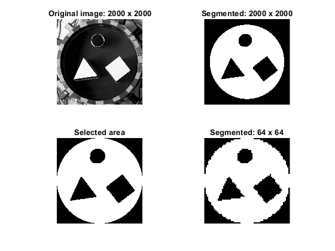

Contents
Electrical impedance tomography dataset: Segmentation
%Targets inside a circular 2D tank % For more information: % https://fips.fi/open-datasets/eit-datasets/2d-electrical-impedance-tomography-dataset/ %This is just an approximation. %The original photos present parallax, non-uniform illumination and %slightly different camera positions for each case %This code does not correct this errors. close all clear clc
Creating a logical image of the tank: original size
Based on https://matlab.fandom.com/wiki/FAQ#How_do_I_create_a_circle.3F
%Image parameters imageSizeX = 2000; %works for square images imageSizeY = 2000; [columnsInImage, rowsInImage] = meshgrid(1:imageSizeX, 1:imageSizeY); % Circle parameters. centerX = 1000; centerY = 1000; radius = 870; %This is an approximation %Calculating circle points circlePixels = (rowsInImage - centerY).^2 + (columnsInImage - centerX).^2 <= radius.^2; %Converting from logical to double and displaying vq = double(circlePixels);
Reading original images
Downloaded from: https://zenodo.org/records/1203914
% Works for the cases without foam: 1-5, 7 data1 = 5; data2 = 1; string = "fantom_" + data1 + "_" + data2 + ".jpg"; v2 = imread(string); %read image v2 = imresize(v2, [2000, 2000]); %not all images are 2000 x 2000 v2 = double(im2gray(v2)); v = mat2gray(v2); %Convert to gray scale seg_I = vq.*v; % Set to zero the pixels outside the tank seg_I = im2double(seg_I);
Segmentation
thresh = graythresh(seg_I); %Otsu's method for binary segmentation seg_I = double(imbinarize(seg_I,thresh)); seg_I=medfilt2(seg_I,[5,5]); %median filter to remove small artifacts seg_fill = imfill(seg_I, 'holes'); %(morphological filtering) Opening, because the conductive targets are rings %Close and opening to remove small artifacts se = strel('disk',15); seg_I_closed = imclose(seg_fill,se); % J = imopen(seg_I_closed,se); % Second Otsu's segmentation thresh2 = graythresh(J); J = imbinarize(J,thresh2); % J(J>thresh2) = 1; % J(J<thresh2) = 0; % J(J==thresh2) = 1;
Resizing the results
%New image parameters imageSizeX2 = 64; imageSizeY2 = 64; segmented3 = vq + J; %tank and targets masks segmented3( ~any(segmented3,2), : ) = []; %Remove the rows with zeros segmented3( :, ~any(segmented3,1) ) = []; %Remove the columns with zeros segmented3(segmented3>1) = 0; %Resize with nearest neightbors method segmented_resized = imresize(segmented3, [imageSizeX2, imageSizeY2], 'nearest');
Visualization
figure subplot(2,2,1) imshow(v2 - J,[]) axis square title('Original image: 2000 x 2000') subplot(2,2,2) imshow(vq - J,[]) axis square title('Segmented: 2000 x 2000') subplot(2,2,3) imshow(segmented3) axis square title('Selected area') subplot(2,2,4) imshow(segmented_resized) axis square title('Segmented: 64 x 64')